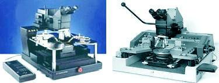
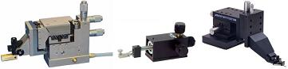
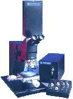
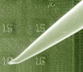

|
Microprobing
Microprobing,
or simply probing,
is a failure analysis technique used to achieve electrical contact with
or access to a point in the active circuitry of the die. It employs a special piece of equipment known as a
microprobing
station,
which is also commonly referred to as a 'probe station' (see Fig. 1).
Electrical contact is made by dropping fine-tipped
probe needles directly on the point of interest, or on an area to
which the point of interest is connected.
The size of the tip of the needle used is chosen based on the
electrical contact needed and on how large the probing area is.
Each of these needles is held by a
micromanipulator
(see
Fig. 2), which is the accessory controlled by the analyst to land the
needle on the die precisely.

Fig. 1.
Examples of Microprobing Stations
During
circuit analysis by microprobing, the analyst employs the
same
thought process as when
troubleshooting a full-size circuit. Microprobing is only a tool for the
analyst to access critical nodes on the microscopic die circuit while analyzing the
behavior of the various parts of the circuit. The process of
electrically pinpointing the failure site is known as
failure isolation,
which requires the analyst to identify
abnormal
voltages and/or currents on the die.
Voltage and
current
measurements
are performed by the electrical measurement
instruments
attached to the probe needle through the micromanipulator. Common
instruments attached to the probe station are voltmeters, curve tracers,
oscilloscopes,and the like. Circuit
excitation
from voltage supplies, waveform generators, and the like may also be
supplied to the die circuit in the same manner.

Fig. 2.
Examples of Micromanipulators
The
glassivation on top of the die surface to be probed is often removed by
reactive ion etching prior to probing.
Probing a die surface with an intact glassivation is difficult
because the glass layer is hard to penetrate with a probe needle.
Furthermore, broken glass tends to make the probing area messy,
and may even make the electrical contact intermittent, especially when
small or narrow metal lines are involved. As an alternative, glass
openings may be made
on
prospective probing points by blasting the glass accurately with a
laser cutter.
|
 |
|
Fig. 3.
Photo of a stand-alone laser cutter
Note: a laser cutter is more
often installed atop the microscope of the probing station since
laser cutting is almost indispensable to microprobing
|
Microprobing
almost always requires a
schematic diagram and a
die lay-out of the
device to be effective and efficient. The analyst needs these
diagrams to immediately pinpoint critical nodes for probing to isolate
the failure site.
During failure isolation, the goal of the analyst
is to 'zero in' on the bad component(s). This is difficult, if not
impossible, to do without the ability to
isolate
circuits from each other. The
laser cutter
is an indispensable tool for this purpose, allowing metal lines to be
burned
open for convenient isolation of nodes from one another.
If the analyst is not so familiar with the
circuit and how it works, microprobing can still be performed as long as
a correlation or
known good
unit
is available.
Probing in this case proceeds by
comparing
the voltages or signals at critical nodes of the sample with those of
the good unit.
A
novice failure analyst must
never
make his first microprobing attempt on
a real sample, since microprobing requires a high degree of skill.
Eye and hand coordination, as well as experience, is needed to
locate the area of interest, choose an appropriate probing spot, land
the needles (see Fig. 4), and exert the correct pressure for good electrical contact.
Die scratches and even chip-outs result if probing is not done
correctly.

Fig. 4.
Photo of a microprobe needle on the die surface
See Also:
Failure
Analysis; All
FA Techniques; Curve Tracing;
Decapsulation;
Microthermography; LEM;
Die
Deprocessing;
SEM/TEM
FA Lab
Equipment; Basic FA
Flows;
Package Failures; Die
Failures
HOME
Copyright
©
2001-Present
www.EESemi.com.
All Rights Reserved.
|